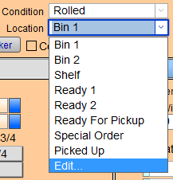
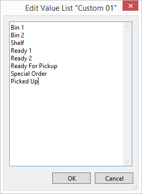
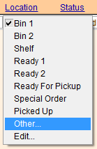
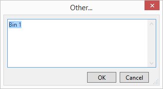

Track Artwork and Work Orders by Location
Tracking your Artwork / Order by Location
-
The Location field is a drop-down list to identify where artwork is stored prior to framing, e.g. Bin1, Shelf2, Drawer3, etc. and to quickly know where the finished product is located, e.g. Ready1, Ready2, etc. or Ready for pickup.
-
After your customer has received their order, change the location to Picked Up. This lets everyone know that it is no longer on the premises, and that it is not part of your insured value of the store.
Tip: Location is also used by some shops to identify and monitor production status, e.g. Materials In, Cut, Assembled, etc.
-
The Location field is also visible when you switch to list view, allowing for quick end-of-day accounting of all work completed and their storage locations.
-
Exactly the same Location field is also available on the Products > Pricing tab.
How to Add/Remove Items on the Location list with Edit...
Locations can be removed or added to the Location pop-up menu by editing the 'value list' for the Location field:
-
Open the Location field using the dropdown arrow. Click on the word Edit... located at the bottom.

-
A dialog box appears.

-
In the Edit Value List dialog box, position your cursor where you wish to start a new entry.
Use the Enter key to create a new line so there is room for your new item. Type in your new location. -
You can remove items in the list by simply deleting or backspacing them out.
-
Leave the hyphen at the bottom of the list. The hyphen creates a separation line when you preview the list in the Work Order screen.
-
Click OK to close the window.
Do not remove Special Order from your Location list. This entry is used in the Product file by FrameReady to identify artwork which has been specifically ordered for a client.
How to add Temporary, Unusual, or One-time items on the Location list with Other...
There are times when you may want to add a location used in only one order, e.g. oversize piece which will not fit in any of your standard locations.
-
In Work Orders, switch to List View and click in the Location field.
The following does not work in Form View.
-
The location pop-up menu appears.

-
Choose Other...
-
A dialog box appears.

-
Type in your item and click OK.
The new entry is displayed but not permanently added to the pop-up menu. This is a great way to record infrequently used locations without cluttering up the standard Location list.
-
The Other... option is not available in form view of the Work Order. Switch to List View and then click in the Location field.
-
In the Product file, it is available on both the Form View and List View screens.
How to Delete a Location and leave it blank
After selecting a location (e.g. Bin1) from the pop-up menu, the text appears in the Location field.
-
To remove the item from the field, re-select the item, e.g. Bin1.
The field is outlined with a blue border. -
Immediately press the Delete or Backspace key to remove it from the field.
The location remains in the drop-down menu for future use.
How to Change a Location
After selecting a location (e.g. Bin1) from the pop-up menu, the text appears in the Location field.
-
To change the Location shown in the field, click on the field and select a different location from the drop-down menu.
-
There is no need to delete the item from the field before re-selecting a different location in the list.
© 2023 Adatasol, Inc.